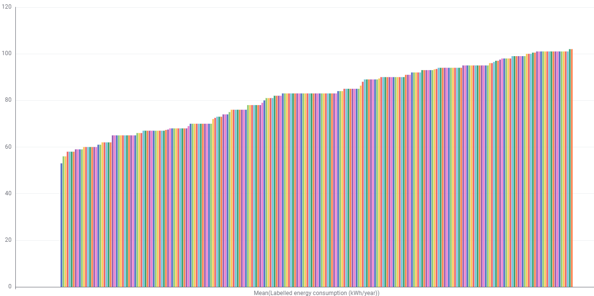
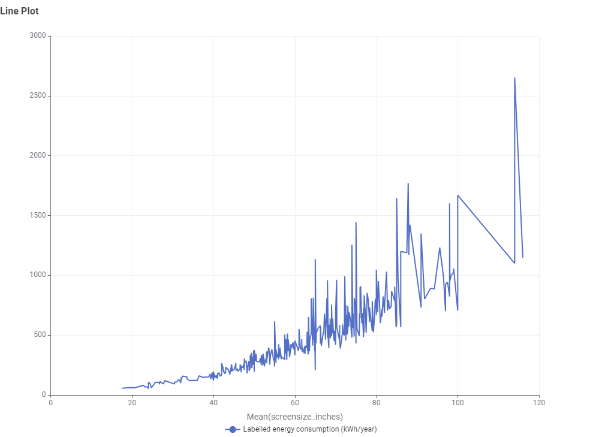
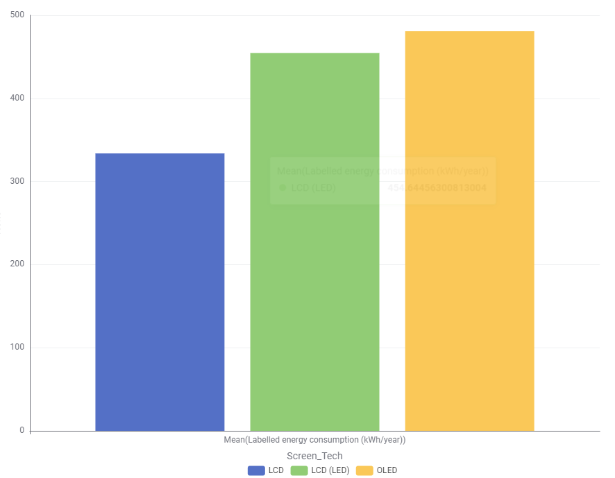

Australia's Energy Efficiency Resource
Know Your
Energy
Costs.
Australian households spend an average of $2,000 per year on electricity. Understanding appliance energy consumption is the first step toward reducing your bills and lowering your carbon footprint.
Why Energy Ratings Matter
Australia's Energy Rating Label has been helping consumers make informed decisions since 1986.
Star Ratings
The more stars, the more energy-efficient the appliance. A 6-star fridge uses roughly half the energy of a 2-star model of the same size.
Running Costs
Labels display estimated annual energy consumption in kWh, allowing you to calculate exact running costs based on your local electricity rate.
Climate Impact
Australia's grid emits approximately 0.7 kg CO₂ per kWh. Choosing efficient appliances can save hundreds of kilograms of emissions annually.
Standby Power
Australian homes lose up to 10% of electricity to standby power. Modern efficient appliances are designed to minimise idle consumption.
Top Energy-Consuming Appliances
Ranked by typical annual energy use in an average Australian household.
Source: Australian Government — Department of Climate Change, Energy, the Environment and Water (2023 estimate)
Product Category
Televisions
TVs account for a growing share of household energy use as screen sizes increase. Understanding how panel technology and usage patterns affect consumption can save Australian households up to $80 per year per device.
Energy Consumption Across Models, Technologies and Screen Size
Energy consumption varies significantly across display Models.

Energy consumption varies significantly across our television range, with usage levels
differing by model specifications such as screen size, display technology, and efficiency
rating.
The chart shown represents a sample of models from a catalogue of over 4,000 televisions,
providing an illustrative view of how annual energy usage can vary across the product range.
While some models are designed for higher energy efficiency, others may consume more power
to support larger displays or advanced picture technologies.
Power usage differs across more than 4,000 TV models surveyed. The chart above shows a
representative sample, highlighting how annual energy consumption can vary depending on
model size and features. This helps customers compare running costs alongside picture
quality and
performance when choosing the right TV. Customers who wish to purchase televisions should
take into accountscreen size , energy efficient rating and cost of energy in the customer'
region

Energy consumption generally increases with screen size, with larger televisions requiring significantly more power than smaller models. While smaller screens tend to have lower running costs, larger and premium display models can consume substantially more energy due to increased panel area and enhanced performance features. This comparison helps customers balance screen size, viewing experience, and long-term energy efficiency.

When choosing your next display, understanding the balance between performance and power is
key. According to recent consumption data, traditional LCD screens remain the most
energy-efficient option, averaging roughly 335 kWh per year. In contrast, LED-backlit LCDs
and premium OLED panels draw more power to achieve their superior brightness and color
depth, with OLEDs reaching the highest average consumption at nearly 490 kWh per year. This
increase is largely due to OLED's "emissive" nature, where every pixel generates its own
light to produce those signature deep blacks and vibrant highlights.
While OLED offers the pinnacle of picture quality, its per-pixel power demands mean it
typically costs more to operate annually than a standard LCD. LED models sit in the middle,
offering a bright, versatile middle ground but still requiring significantly more energy
than older liquid crystal tech. When building your setup, consider whether the stunning
visual fidelity of an OLED or the high-output punch of an LED outweighs the lower long-term
operating costs of a traditional LCD.
Recomendation
Selecting the perfect television requires balancing visual performance with your home’s specific needs and long-term costs. Start by choosing a technology that fits your environment: OLED provides unmatched contrast for dedicated home theaters, while LED models offer the high brightness needed for sunlit living rooms. Next, determine the ideal screen size by measuring your seating distance; a common rule is to ensure the screen occupies about 30 to 40 degrees of your field of vision for an immersive experience. Finally, keep the energy rating in mind—while premium OLED panels deliver stunning clarity, they often sit at the higher end of the consumption scale, whereas traditional LCD options offer a more budget-friendly footprint for your monthly utility bills.
Our Mission
About Us
PowerSmart AU is an independent, non-commercial resource dedicated to helping Australian consumers understand appliance energy consumption and make choices that reduce both household costs and environmental impact.
Who We Are
Founded in 2024, PowerSmart AU was created to bridge the gap between complex government energy data and the everyday purchasing decisions Australians make. We translate technical standards, efficiency ratings, and consumption figures into clear, actionable guidance.
Our data is sourced from the Australian Government's Energy Rating website (energyrating.gov.au), the Department of Climate Change, Energy, the Environment and Water, and independent laboratory testing where available.
We have no commercial relationships with appliance manufacturers or retailers. Our only goal is to give you the information you need to make confident, informed decisions.
Every figure on our site is sourced from verified government and independent testing data.
We use Australian electricity tariffs, climate zones, and usage patterns — not overseas averages.
Efficient appliances are one of the most accessible ways households can reduce emissions today.
Australia's Energy Context
Key figures shaping residential electricity consumption nationally.
10.8 Million Households
Australia has approximately 10.8 million residential properties, the vast majority connected to the national electricity grid.
~7,000 kWh per Year
The average Australian household consumes around 7,000 kWh annually — above the OECD average due to home size and climate cooling demands.
Rooftop Solar Leader
Australia has one of the world's highest rates of residential solar adoption, with over 3.5 million rooftop PV systems installed as of 2024.
Grid Emissions Falling
Australia's grid emission intensity has dropped from ~0.84 kg CO₂/kWh in 2010 to approximately 0.60 kg CO₂/kWh in 2024, driven by renewable growth.